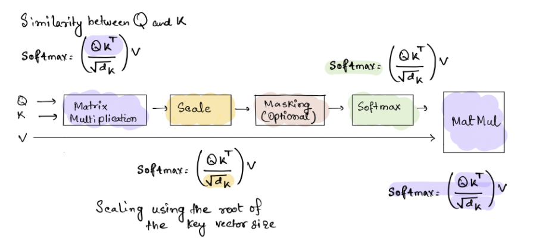
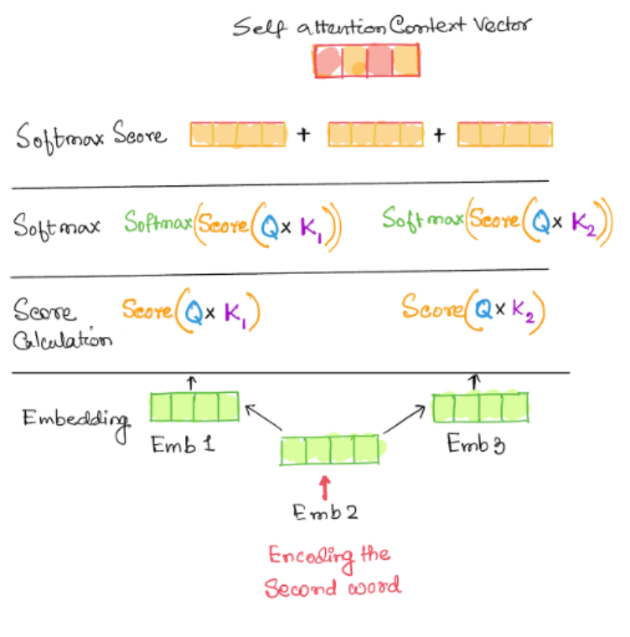
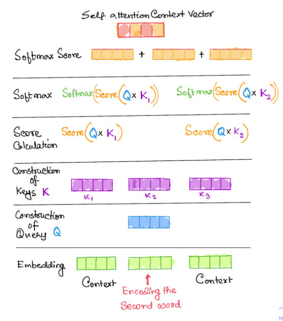
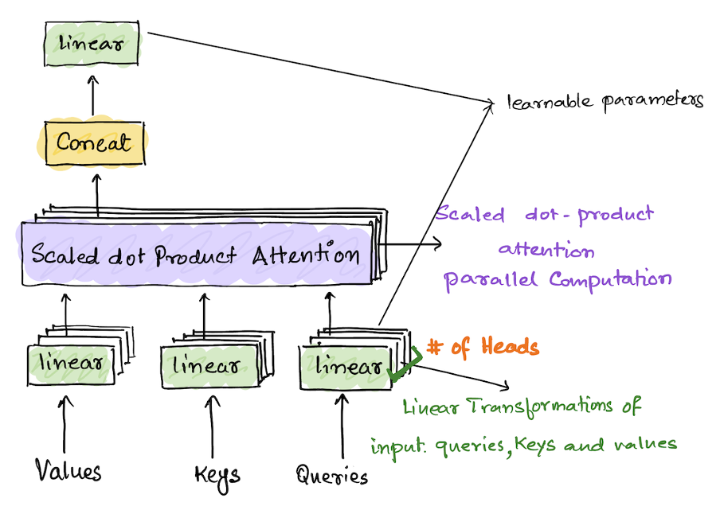
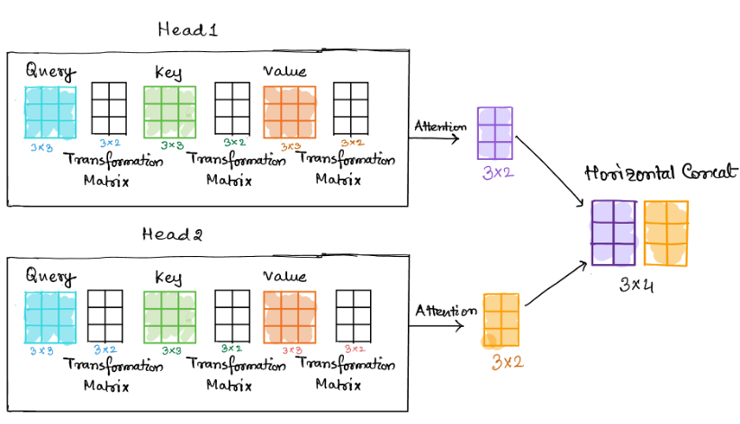

Transformer : An Attention based model
Transformer is a deep learning-based model that was developed for Machine Translation using self-attention mechanism and has a huge application in the field of Natural Language Processing. Transformers mark a paradigm shift from the traditional sequence to sequence models and is based on one of the most significant innovations in deep learning research, which is called Attention. Transformer model was first introduced in the paper called Attention is All You Need [1] published by Google Research in 2017. The concept of Attention Mechanism aims to mimic the traits of human perceptions. The idea of Attention mechanism first appeared in a 2014 research paper called Neural Machine Translation by Jointly learning align and translate [2]. Another paper called Recurrent Models of Visual Attention [3] emphasizes that human perception does not process the scene in its entirety, but it focuses on fragments of a visual space. Human brain does not process a visual snapshot all at once. Attention came out of the aim to attend to most important parts in the image. Attention mechanism is the core of the transformer model.
Before delving into the general Transformer architecture and the features, architecture, input processing of its Vision Transformer [4] variant, following is an exploration of the concepts of Attention and Self Attention mechanism.
Attention Mechanism
The Attention mechanism allows a network to assign different weights or attention to each element in an input sequence. The attention mechanism forms an integral component of modelling dependencies in various parts of an input and output sequence, regardless of their distance in the input and output sequence. An attention model enables a learner to better understand the context of an input. A certain input items attendance to another item signifies the presence of a relation between the two. These items form a part of the contextual information of the input item. Attention mechanism was used for the neural translation use case, and it can be described as a mapping between a query, a key-value pairs, and an output. The queries, keys and values are all represented as embedding vectors. A compatibility function calculates an alignment score between the input query and a weight is assigned to each value based on the compatibility function score.
The main objective of self-attention is to use the whole sequence is to compute a weighted average of each embedding.
Scaled Dot Product Attention
The scaled dot product computation algorithm receives inputs as queries and keys of dimension dk and values of dv the query and the key vectors are used to calculate the compatibility score that describes how well the queries and keys match. These alignment scores are then turned into weights used for weighted sum of the value vectors. This weighted sum of the value vectors is returned as the attention vector. The process is performed by scaled dot product attention. The queries are accumulated in a matrix Q, so attention can be computed simultaneously for each query.
Following is the computation model and steps for calculating the scaled dot product attention. The attention layer outputs the context vectors for each query. The context vectors are weighted sums of the values where the similarity between the queries and keys determines the weights assigned to each value. $$ Attention(Q, K, V) = softmax(\frac{QK^{T}}{\sqrt{d_K}})$$
1. The key value matrices are created by stacking the embeddings for each word in an input sequence. The queries and the transpose of keys matrices are multiplied together to get a matrix alignment score
2. These are then scaled by the square root of the dimension of the key vector.
3. The scaled score are converted to weights using the softmax function to get the probabilities as the output
4. The weights and the value matrices are multiplied to get the attention vectors for each query.
When the softmax output is multiplied with V (the value matrix) we get a
linear combination of the initial input Multiplying SoftMax output with V is a
linear combination, which is passed to the decoder.
steps for calculating the scaled dot product attention
|  |
Self-Attention: - Encoding the second Item in the input Sequence
The input items are all embedded first. The embeddings are scored against each other. In this stage the input item being encoded is compared and scored with other input sequences. The score is then scaled with the square root of the inverse of the dimension of the keys.
A softmax function is applied on the outcomes and the softmax score is multiplied with the embedding of the current input item to get the level of expressions of each of these vectors. These vectors are then added together to construct the self-attention context vector. In this process the input vector is attending to all other items in the input sequence.
A schematic diagram of the process of encoding the second word by comparing it with the other words in the input sequence is shown below.
|  |
A query for each embedding is constructed by multiplying the embedding vectors with a query layer by a query matrix. Here the queries are passed through a feed forward neural the keys are created by using a similar process.
|  |
Multi-Head Attention
In Multihead self-attention mechanism each head uses different linear transformation to represent different relationships and associativity between input tokens. The scaled dot product attention is calculated by using the query, key, and values matrices that are generated from the word embeddings. In MultiHead attention the attention mechanism is applied parallelly to multiple copies or sets of these queries, keys, and values matrices generated from the embeddings. In the transformer model, different representations are constructed by linearly transforming the original embeddings of the query, key, and value matrices for each head in the model. Each head can learn different relationships between input tokens and come up with different weight vectors. The fact that multiple heads apply the attention mechanism at the same time to multiple sets of these matrices saves computation time as well. The number of heads determines the number of sets of these matrices are needed to perform a successful MultiHead operations. The attention scores computed by each head are horizontally merged
Computation of weight matrices using Multi heads
1. The input to the Multi_Head attention block is the query, key, and value matrices. Each type of matrices has the number of sets equal to the number of heads in the Multi-Head block. 2. Apply scaled dot attention mechanisms to every set of keys, queries, and values. 3. Concatenate each head into a single matrix 4. Lastly, another transformation happens to get the output context vectors.
|  |
Following diagram shows an example of the matrix multiplications executed to compute a merged attention vector. The example below has two heads and the number of columns in the input parameters (query, key, and value) are the dimensions of the embedding vectors. The number of rows is the number of tokens in a sequence. If the embedding vector has dim (3) and we have 3 tokens in a sequence, then the dimensions of the inputs will be 3 x 3 for all the matrices. The input matrices are transformed by a linear transformation by multiplying with 3 x 2 matrices. These weight matrices give us different representations for each head and the key components for the parallel attention computation process. After the scaled dot product computation each head returns an attention matrix of dimension 3 x 2 for this scenario. This is equal to the dim (query or value) / number of heads.
|  |
The dimensions of the embeddings and the query size or value size (query dim == value dim) are the two hyperparameters that can be tuned during the training process.
Transformer Model
The traditional transformer model consists of an encoder and decoder. The encoder converts the input tokens into embedding vectors and inputs the embeddings into the transformer model. The decoder takes the attention vectors calculated by the encoder and generates output sequence of tokens. The input is then passed to the stack of encoders. Encoders output is fed into the stacks of decoders which generates the output, which is the next token in the sequence. We can use standalone encoders and decoders for specific use cases. For example, the Vision Transformer uses only encoder-based architectures.
Architecture
The Encoder component in the transformer architecture starts with a MultiHead Attention Layer. In the MultiHead attention layer the linear transformations are learnable parameters. The MultiHead attention layer performs self-attention on the input sequence, each item (word or an image patch) attends to every other item in the input sequence. This is followed by a residual connection and normalization, a feed forward layer, and another residual connection and normalization. The encoder provides contextual representations of each of the input items. Like the encoder layer the decoder architecture comprises Masked MultiHead attention layer, Residual layers, and Normalization blocks. The first attention module is masked so that each position attends only to the previous position. The second attention layer takes the encoder output and allows the decoder to attend to all the items. The decoder layer comprises stack of decoders.